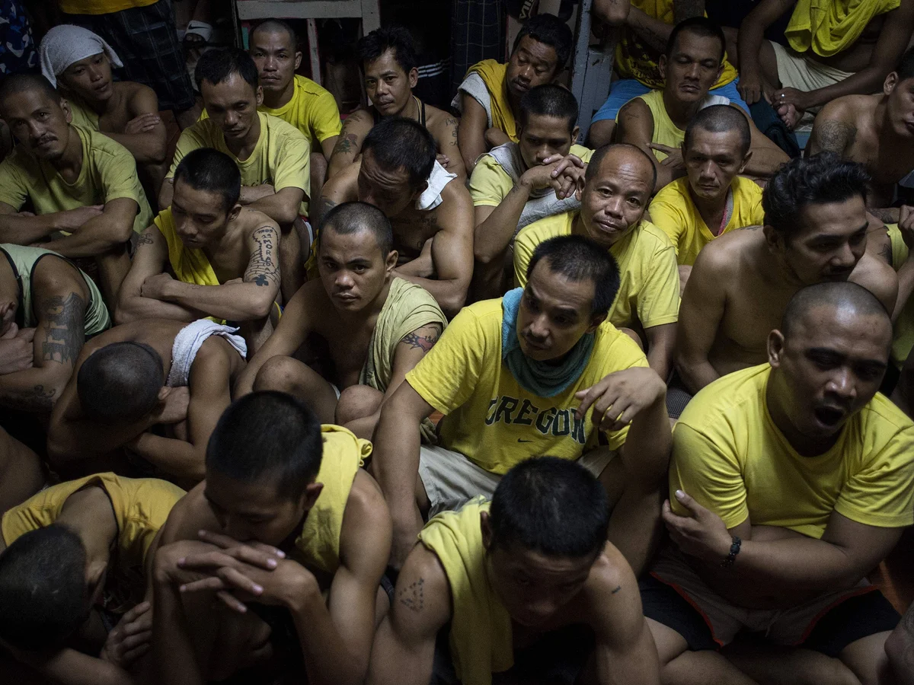

This study aims to examine how enhancing judicial efficiency through the use of Information and Communication Technology (ICT) can help address jail overcrowding in the Philippines, with a specific focus on expanding pro‑bono legal representation for indigent inmates. It seeks to explore how ICT‑enabled court processes, such as e‑filing, virtual hearings, and digital case‑tracking systems, can accelerate case processing, reduce procedural delays, and shorten periods of pre‑trial detention. The study also analyzes the role of pro‑bono lawyers in ensuring that poor and marginalized inmates receive timely legal assistance, thereby preventing wrongful or unnecessarily prolonged incarceration. By assessing how broader access to free legal services, combined with digital tools in the justice system, contributes to the decongestion of jails and prisons, the study intends to propose a synergistic model that promotes a more efficient, humane, and rights‑based criminal justice system in the country.